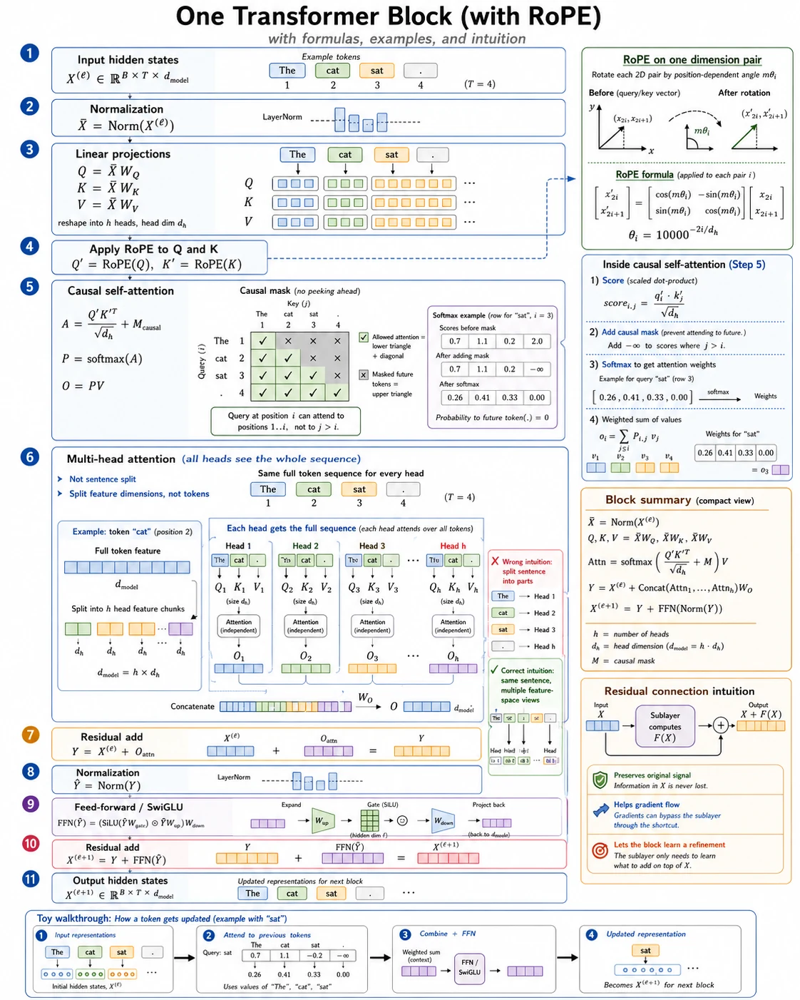

Your win: narrate every operation in a pre-norm causal Transformer block with RoPE, including its shape and purpose.
20 minutesNeeds: Lessons 1–22Outcome: teach the complete algorithm
Final mission: start with \(X^{(\ell)}\), finish with \(X^{(\ell+1)}\), and explain exactly where position, comparison, probability, content, and residual updates enter.
8Transform and add: \(X^{(\ell+1)}=Y+\operatorname{FFN}(\operatorname{Norm}(Y))\)second residual

The whole block in one view. Follow the numbered path top to bottom, then use the worked example below to substitute actual matrices at the attention stages.
Toy walkthrough: \(B=1,T=2,d_{\text{model}}=2,h=1\)
Use RMSNorm with unit scale, identity projection matrices, positions \(m=0,1\), RoPE angle step \(\theta=\pi/2\), and
After the second normalization, suppose the learned SwiGLU produces the toy update \(F=\begin{bmatrix}0.1&-0.2\\0.3&0.1\end{bmatrix}\). The block output is
The chosen \(F\) stands in for the SwiGLU calculation from Lesson 22; every attention-stage number above is calculated explicitly.
Teach-back checkpoints
RoPE's exact job
Rotate Q and K pairs by position-dependent phases so \(q_m'^{\mathsf T}k_n'=q_m^{\mathsf T}R_{n-m}k_n\). It does not rotate V.
Attention's exact job
Use masked query-key comparisons to build probability weights, then blend value vectors from allowed positions.
Code checkpoint · assemble the TransformerModel
The block pieces from Lessons 15–22 now form a decoder-only language model. Every block preserves \([B,T,D]\); the language-model head converts the final features into one logit per vocabulary item.
Show the final assembly
class TransformerModel(nn.Module):
def __init__(self, config):
super().__init__()
self.token_embedding = nn.Embedding(config.vocab_size, config.hidden_size)
self.layers = nn.ModuleList(
TransformerBlock(config) for _ in range(config.num_layers)
)
self.final_norm = RMSNorm(config.hidden_size, config.norm_eps)
self.lm_head = nn.Linear(config.hidden_size, config.vocab_size, bias=False)
self.lm_head.weight = self.token_embedding.weight
def forward(self, input_ids):
x = self.token_embedding(input_ids) # [B, T] -> [B, T, D]
for layer in self.layers:
x = layer(x) # [B, T, D] -> [B, T, D]
return self.lm_head(self.final_norm(x)) # [B, T, vocab]
Name the two places where information is mixed across features and the place where it is mixed across tokens.
Teach the block aloud in under two minutes without saying “it just learns it.” Name the input and output of every stage.
Check solutions
Normalize; project Q/K/V; apply RoPE to Q/K; score and causally mask; softmax and blend V; concatenate heads and apply \(W_O\); first residual; normalize, SwiGLU, and second residual.
Split Q: \(2\times3\times5\times4\); one head score per batch: \(5\times5\); concatenated output: \(2\times5\times12\); final output: \(2\times5\times12\).